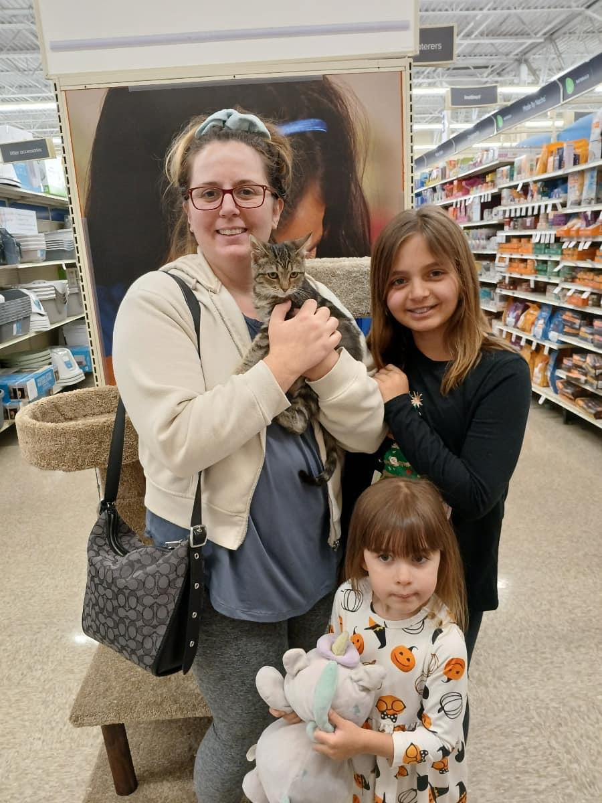
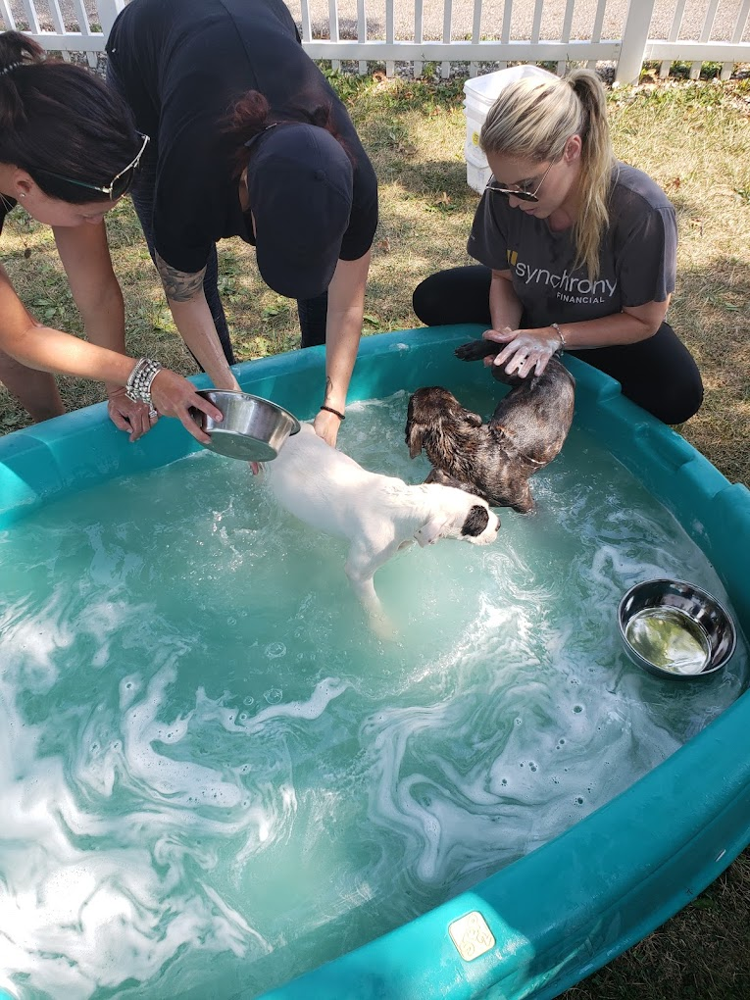

Our educational programs remain a top priority for the Stark County Humane Society. These programs contain age-appropriate instructions regarding responsible pet ownership. The programs include videos, discussions with the students and interaction with shelter animals that are transported to the schools by volunteers and/or staff. Through these educational efforts, it is our hope that these children will grow into responsible pet owners who love and care for their animals. We also welcome volunteer groups of students to help at the shelter.
As many of us know, animals offer companionship, comfort, and much joy. For nursing home residents and others with special needs, our pet therapy program provides the opportunity to enjoy friendly visits on a regular basis with a shelter volunteer or staff member and a puppy or kitten.
Our employees continue to respond to complaints regarding cruelty, abuse, or abandonment of animals throughout the county. The education of pet owners may be appropriate in some cases. However, our employees are trained in compiling evidence to successfully prosecute pet owners who violate the law. In 2023, a total of 555 complaints were investigated. Many of these complaints were due to pet owners moving and not taking their pets with them. We have had several calls from health departments and social services because an owner was not able to care for their animals or had many animals in their home. Ohio still is behind the rest of the country in updating cruelty laws. Many of our animal laws are over 150 years old, and desperately need to be revised. Our vehicles cover the entire county for cruelty investigations and pick up stray sick and/or injured animals. In 2022, we had a total of 577 day and night calls. In 2016, after years in the making Goddard’s Law went into effect for the State of Ohio. It will now be a fifth-degree felony to knowingly cause serious physical harm to a companion animal. This includes depriving the pet of food, water or shelter or inflicting long-term pain.
